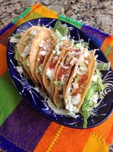

Tacos Dorados

Description
Tacos Dorados are a delicious type of Mexican taco made with potatoes and corn tortillas.
They take some time to make as the potatoes need to be boiled and the tacos fried but the
steps themselves are fairly simple.
Ingredients
- Corn tortillas
- Potatoes- Russet or Yukon
- Vegetable oil
- Parmesan cheese 8 oz
- 1 Stick of butter
- Cream Cheese 8oz
- Cheese- Cacique Queso Ranchero
- Iceberg lettuce
- Tomatoes
- Poblano peppers
Steps
- Our first step will be to prepare the potatoes. We need to wash them to get all
the dirt off them. You can scrub them and keep the skin on them or peel them, completely
up to you, just wash them.
- Once the potatoes are washed we will want to put them in a pot and cover them with cold water.
Bring the water to a boil and then let them simmer for 45ish minutes. You want them to be soft enough
that you can mush them with a fork. It may take less than 45 minutes depending on how high you
have the heat so check on them every 10 minutes or so. While the potatoes are boiling you need to set
out your stick of butter so it reaches room temperature and is easy to mush. Don't cover the pot or
leave it unattended for too long. If the water boils over it will make a mess and you don't want extra
stuff to clean up.
- 45 minutes is a long time so you can go ahead and prepare the tacos toppings when the potatoes
are almost done. Chop the lettuce and tomatoes. You can roast the peppers before you chop them up if you want
some extra fire in your mouth, otherwise just chop them. If you don't want to chop the tomatoes/peppers you
can also just buy pico de gallo, it's also a great topping for these tacos but I don't
know how to make it so this recipe just lists tomatoes as a topping :D . Crumble your cheese as well
and set all your items in the fridge until the potatoes are ready.
- We need to prepare the tortillas as well. Corn tortillas aren't very fond of being
folded before they are heated up, so take 5 at a time and microwave them 1 minute
at a time until they are hot and easily folded in half without breaking.
- Now that the potatoes are nice and soft we need to drain them. You can either pour them into
a strainer in the sink or use a pot lid to keep them in while you pour the water out. Add in the
room temperature stick of butter, the 8 oz of cream cheese and the 8 oz of parmesan into the
hot potatoes. Use the potato mashing tool to mash the potatoes and mix the ingredients together. You
want to do this very quickly after draining the potatoes so the heat helps melt everything together.
I have to be honest here and say that I don't know if this is how other Mexicans prepare
their potatoes for Tacos Dorados. I basically make mashed potatoes and then use them for my tacos.
I doubt that's the standard way to make these but they're delicious and I learned how to make
mashed potatoes first so here we are.
- You'll want to be careful on this step. Use a spoon to scoop some potatoes
into a tortilla and then fold it in half. If the tortilla is still hot from being
microwaved you want to make sure not to burn yourself. I usually set it on the counter and
scoop onto them there.
- You can start this step before the last one or during, it depends on how many tacos you're making.
Add a fair amount of vegetable oil to a skillet and turn the heat to medium-high. You don't
want to do this at the very beginning of the last step if you are preparing lots of tacos because
the oil can start to burn if left on for too long without anything being added to it. You will need
the oil to be hot enough to immediately start frying the tacos once they are placed in it so use
your best judgement. If you don't want to worry about timing it perfectly, then finish the last step and
then start this one. It'll take a bit longer since you'll have nothing to do while the oil heats up
but I'm sure you can keep yourself busy.
- Use tongs to place the tacos into the hot vegetable oil. The oil should be deep enough that the
first set of tacos are submerged. The oil will go down as you cook more tacos in it so by the last
few tacos it might only cover half of them. After a minute or so, flip the tacos over so the other half
gets fried properly. Ultimately use your best judgement to decide when to remove them from the oil.
You want them crunchy but not burnt.
You may notice some bits of potato falling out of the taco and floating around the
oil. Thats fine. They'll just be crunchy bits that will stick to the later tacos. My husband
loves them so once the tacos are done I just scoop them out and he snacks on them while I
prepare the tacos.
- Once your first set of tacos is ready to be pulled from the oil, place them onto a serving plate/tray with
a few paper towels on it. This will help absorb the oil dripping off the tacos and prevent the tacos
on the bottom from becoming overly greasy once you start adding tacos on top of them.
- After all the tacos are fried you can open them up and add the toppings you prepared earlier. I listed
some of my favorites as ingredients but you can add things like sour cream, shredded cheese, salsa and many
more classic taco toppings to your liking.
- Enjoy!
Back to main page